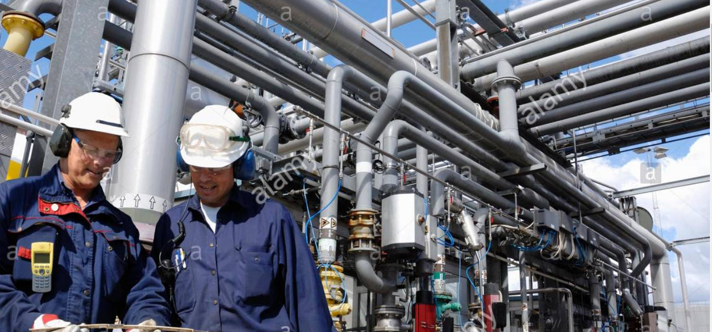

Problems and solutions in the Oil and Gas sector
Problems in the Oil and Gas Sector
Nigerian oil and exports (May-July, 2018) Over the past few years, Nigeria, Africa's top oil exporter, has been beset by a multitude of problems,notably decreased crude production and exports, oil theft and pipeline vandalism, stalled economic reforms and recovery, and the threat of oil price volatility. While the Nigerian oil industry has een cautiously optimistic toward upheavals in 2018, the nation has and will continue to face several acute challenges. In May 2018, the Nigerian petroleum industry underwent production complications as outages at key pipelines supplying Forcados and Bonny Light grade crudes were out of commission. In particular, the shutdown of Nembe Creek Pipeline in mid-May, which trnsports 150,000 bpd of Bonny Light to Forcados terminal, caused Shell Petroleum Development Company of Nigeria to declare a force majeure on Bonny Light crude exports. Although Shell has declined to comment, there is speculation this shutdown was due to sabotage. Shell lifted the force majeure on July 13th, when repairs were completed.
This shutdown has, in conjunction with the closure of the leaking Trans-Forcados pipeline, which transports 200,000-240,000 bpd, led to further delays and an accumulation of unsold crude.According to S&P Global Platts, these factors caused Nigeria's oil production to drop by 150,000 bpd from 1.8 mbpd in April, dropping it to 1.73 mbpd in May and 1.72 mbpd in June.
Facing these suppply concerns, oil exports are expected to decline further to 1.43 mbpd throughout July. Acording to Reuters, 48 cargoes of oil exports are expected to be loaded in July, compared with cargoes in June. In July 20-34 million barrels of Nigerian oil has gone unsold as traders have sought alternative supplies. Marketing Nigerian crude grades has become difficult due to the price spread between Brent And West Texas Intermediate, which gives an advantage to WTI petroleum over Brent priced ones.
With unsold crude inventory, Nigeria was less cooperative than its Persian Gulf OPEC compatroits to raise production, but acquiesced to Saudi-led efforts to dampen the market. Following this decision, Professor Wumi Iledare, President of the Nigerian Association for Energy Economics, has called for the central government to take steps to boost Nigeria's production capacity in order to support future participation in OPEC supply increase
If Nigeria is unable to boost production in the wake of this meeting, the supply increase could affect central government's revenue, which relies on crude sales for 2/3rds of economy as a whole. For a nation over-reliant on oil and rated by the Brookings to be the poorest in the world, this and other chances to the oil market could have massive domestic ramification.
Instability in Niger Delta For over two decades, oil production in Niger Delta has faced an insurgency from militants demanding a more equitable distribution of oil revenues and a solution to the widespread pollution. The Niger Delta Avengers (NDA), and other insurgency groups have attacked pipelines and stolen crude oil to impact Nigeria's economic growth and the central government's oil revenues.
In August 2016, NDA reached a tenuous ceasefire with the Nigerian government, but in January 2018, the group pledged to launch attacks on Nigeria's infrastructure. While oil flows from Nigeria have begun to recover since 2016, security threats have continued. In June 2018, Igo Weli, general manager for external relations of Shell,s Nigeria operations, stated "Security in parts of the Niger Delta remains a major concern"
Solution to the problems in the Oil and Gas sector
Increasingly, we are seeing a lot more oil and gas companies trailing and enjoying successs with a widening range of technologies and solutions that are helping them become more sustainable, minimise costs and ultimately cut their carbon footprint. With so many of the Middle East's OPEC countries pushing the pace of their economic diversification strategies, this is prompting even greater and faster adoption sustainablity measures across the industry, so we can expect to see a lot more instances of companies exploring the following:
1. Better use of data
At the end of last year, McKinsey placed the O&G industry's performance gap at $200 billion. Our research states that on average, offshore platforms run at only 77% of maximum production potential. Correctly inplemented data analytics systems and tools can overcome the operational complexity of Oil and Gas operations, quickly yeilding returns of as much as 30-50 times the original investment and reducing ecological impact by reducing wastage accidents and bottlenecks.
2. Decreasing freshwater usage
Water is an essential element in various oil production processes, from fracking to separating oil from other elements present in oil sands. Hundreds of millions of barrels of water are utilised every single day, and while the global O&G industry currently manages to recycle the vast majority of this water (between 80-95%), companies are rethinking the extraction process to reduce freshwater from the very outset.
3. Improving water recycling efforts
In order to decrease freshwater usage, O&G companies are exploring more effective ways of recycling aand re-using water for their operations. Increasingly, companies are aiming to use 100% non-potable water by improving filtration oxidisation methods, as well as advanced chemical-free water treatment solutions to neutralise bacterial contaminants such as sulphate-reducing and iron-oxiding bacteria.
4. Reducing methane leaks
Finding ways to reduce methane leaks is a cost-effective opportunity for the industry. Recent figures from the International Energy Agency have outlined that it is financially possible to reduce oil and gas methane emissions (1)Utilising currently available and emerging technologies.
5. Used oil recycling
More companies are utilising small-scale waste-oil micro-refinery units that transform used oil into diesel fuel. Not only does this approach yield fuel for ongoing operations, it,s also a relatively inexpensive alternative to more traditional oil disposal methods.
6. Streamlining/improving processes
Even innovations that don't specifically make oil and gas processing greener and cleaner can still help improve the industry's overall sustainability by allowing for more cost-efficient processes. For example,ultrasound technology allows oil companies to create 3D images of the inside of the inside of oil wells, enabling them to make more informed and cost-effective production decisions. Similarly, IIOT, analytics, automation, reserve and emerging artificial intelligence programmes can all help find find and eliminate operational inefficiences.
By improving the efficency of ongoing operational processes by even small fraction, Oil&Gas companies can produce the same amount but with reduced costs and energy expenditure, leading to a lower overall carbon footprint.
7. Creating digital oilfields
Going beyond incremental operational improvements, the quickening pace of digitalisation of the Oil&Gas industry has allowed for the creation of the 'digital oifields', a process that is starting to come to prominence. Through the use of cloud technologies and big data, the digital oilfield allows for all operational data to monitored, analysed and utilised in real time, leading to safer, more sustainable decisions being made.
8. Greater acquisition and use of renewable energy
While many Oil and Gas companies are looking to lower emissions, just as many are also looking to diversify into the renewables market. At the beginning of 2018, BP said that $0.5 billion of its capital investment fund would be dedicated to clean energy. With more high profile investments like this becoming the norm, Oil and Gas companies are set to transform into significant investor base for renewables in the coming decades.
Equally excitng are the advances being made in biofuel, which may enable production levels on a much larger scale in the near future. Exxon Mobil is currently developing its Calipatria site and believes that due to recent major breakthroughs, it will be capable of producing 10,000 barrels of biofuel per day by 2025. This is an essential step forward in the foundation of an entirely sustainable and renewable biofuel industry